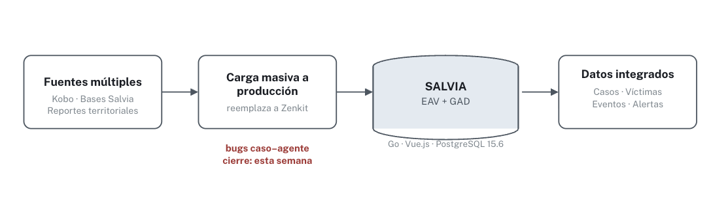

ECOSISTEMA SALVIA — ETAPA 2
Un solo vistazo para cliente y equipo de desarrollo — qué ya opera, qué sigue en construcción y qué falta por resolver antes del cierre contractual. Corte al 24 de agosto de 2026.
Base del sistema, en producción desde la Etapa 1.
Núcleo operativo — 32 HU verificadas en código.
27 HU — flujo de oficios y escalamiento institucional.
20 HU — duplas, sesiones y confidencialidad reforzada.
Fórmulas y formularios de riesgo bajo estructura EAV.
Caracterización, otorgamiento y alertas de prórroga.
Pánico, reporte y Línea 155 ya en Play Store. Falta integración web y bitácora de caso.
Registro especializado y variables diferenciales.
Alcance contractual por confirmar con el Ministerio.
Gestión de remisiones y trazabilidad de beneficios.
Motor de enrutamiento — condiciona el acceso de entidades externas.

Migración carga masiva desde varias fuentes hacia producción, hoy en cierre de bugs.
Canal primario de ingreso de casos. Operativo
Municipal → Departamental/Distrital → Nacional.
Usuario/rol como entidad-actor. Vía Rutas · mockup
Usuarios/rol como entidades-actor.
Acceso regulador y auditor a la base de datos, no usuario de Rutas. Sin definir
Art. 343, Ley 2294 de 2023 · próximos meses
Las entidades operativas (ICBF y afines) entran por interfaz, con usuario y rol anclados al módulo de Rutas, hoy en mockup — sin conectividad de datos por API, por seguridad del entorno de SALVIA. El Ministerio de Salud es una vía distinta: no es usuario de Rutas, sino agente regulador y auditor que necesita acceso a la base de datos para dar fuerza al Art. 343 de la Ley 2294 de 2023 y habilitar SIVIGE. Su mecanismo técnico exacto todavía no está definido — es un compromiso a resolver junto con el Ministerio en los próximos meses, no un pendiente de esta semana.